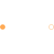

PartialTwoPortElementaryElementary partial two port for textual programming |

|
Information
This information is part of the Modelica Standard Library maintained by the Modelica Association.
The partial two port elementary model extends from the partial two port model and adds one equation considering the balance of flow variables, port_p.Phi + port_n.Phi = Complex(0,0). Additionally, a variable for magnetic potential difference of the two magnetic ports, V_m, and the flux into the positive port, Phi, are defined.
Connectors (2)
| port_p |
Type: PositiveMagneticPort Description: Positive quasi-static magnetic port of fundamental wave machines |
|
|---|---|---|
| port_n |
Type: NegativeMagneticPort Description: Negative quasi-static magnetic port of fundamental wave machines |
Components (2)
| V_m |
Type: ComplexMagneticPotentialDifference Description: Complex magnetic potential difference |
|
|---|---|---|
| Phi |
Type: ComplexMagneticFlux Description: Complex magnetic flux |
Extended by (4)
|
Modelica.Magnetic.QuasiStatic.FundamentalWave.Components
Idle running branch |
|
|
Modelica.Magnetic.QuasiStatic.FundamentalWave.Components
Constant loss model under sinusoidal magnetic conditions |
|
|
Modelica.Magnetic.QuasiStatic.FundamentalWave.Components
Salient Permeance |
|
|
Modelica.Magnetic.QuasiStatic.FundamentalWave.Components
Salient reluctance |